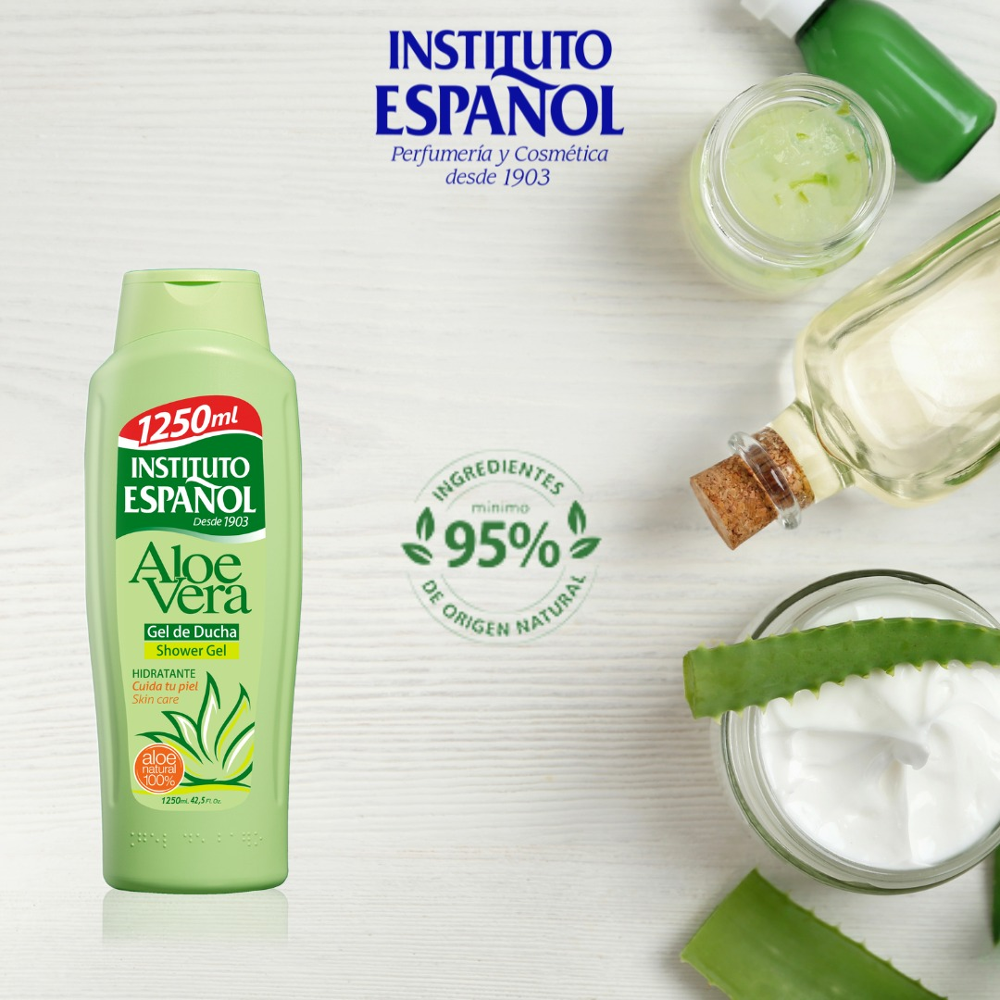
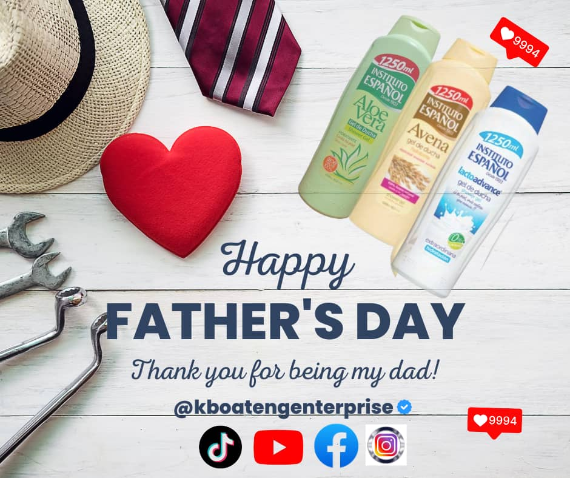
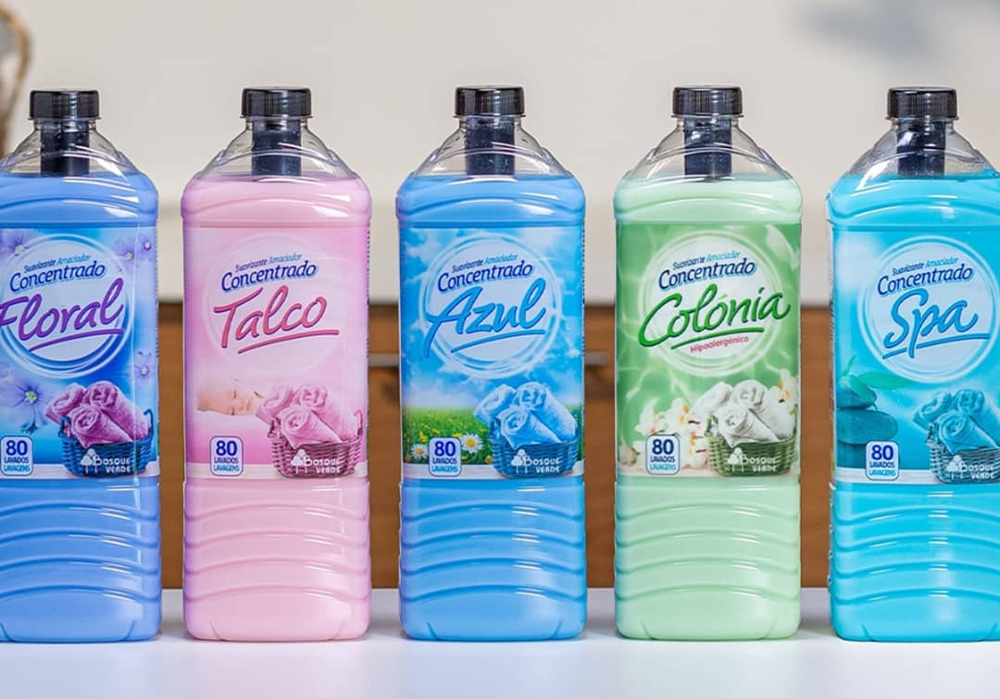
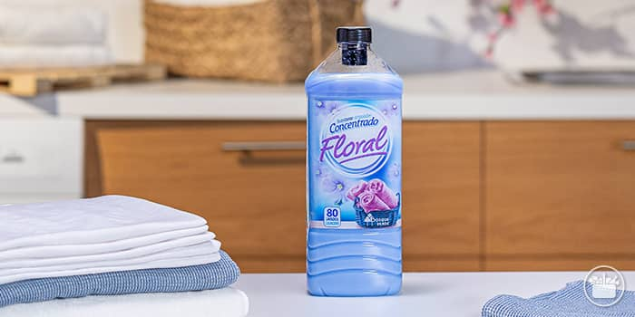
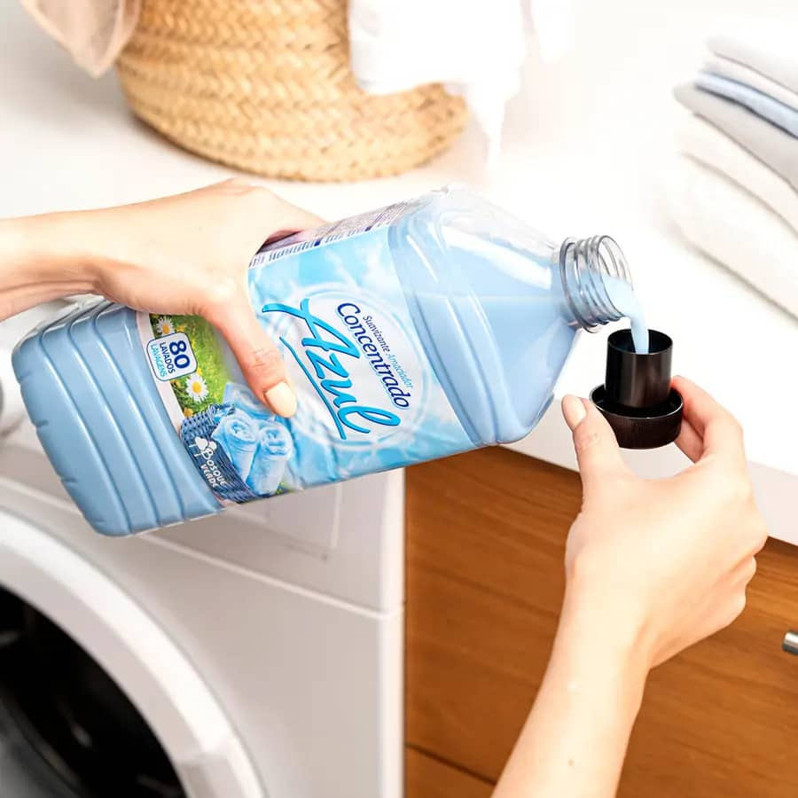
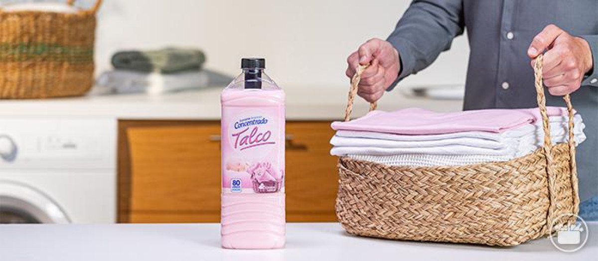

From K.Boateng Enterprise
Stories for everyday care.
Explore helpful product insights, simple tips and moments from our community.
Explore the journal
The journal
Ideas, care & community
Fresh reads from K.Boateng Enterprise.
Skin care
The Hidden Truth About Aloe Vera No One Knows.
While aloe vera is widely known for its soothing and healing properties, many commercial products are heavily diluted or contain harmful additives, diminishing their effectiveness and potentially causing adverse reactions. This means the "magic" many associate with aloe vera may be significantly reduced or even absent in some products.
Continue reading
01/12

Product spotlight
Why Is Instituto Espanol Aloe Vera Shower Gel Good For All Skin Type?
Instituto Espanol Aloe Vera Shower Gel is suitable for all skin types because it combines the moisturizing and soothing properties of aloe vera with a gentle cleansing formula. It doesn't clog pores, helps with irritation and minor wounds, and leaves skin feeling soft and protected. The product is also formulated to respect the skin's natural barrier and is suitable for sensitive skin, including young children.
Continue reading
01/12

Community
How K.Boateng Enterprise Celebrates It Customers On Public Holidays
Happy Father's Day to all the amazing dads out there! To our valued customers, we appreciate the love and dedication you bring to your families. May your special day be filled with joy, love, and cherished moments with your loved ones. Thank you for choosing K.Boateng Enterprise - we're honored to serve you.
Continue reading
01/12

Laundry care
Everything You Need To Know About Suavizante Concentrado Laundary Detergent
"Suavizante Concentrado" translates to "Concentrated Softener" in English. It refers to fabric softeners that are highly concentrated, meaning they contain a higher ratio of softening agents to water compared to traditional softeners. This allows for smaller amounts to be used per wash, potentially saving space and reducing plastic waste.
Continue reading
01/12

Laundry care
How Long Does Suavizante Concentrado Last and Why?
Suavizante concentrado, or concentrated fabric softener, typically lasts for 2 to 3 years if unopened and stored properly. Once opened, it's best to use it within 6 to 12 months as it can begin to break down, according to Gain Laundry Detergent. The longevity of the scent on clothes, however, can vary based on the product and its technology. Some fabric softeners, like Suavitel® Superior Care, utilize fragrance capsules that can make the scent last up to 90 days on fabrics.
Continue reading
01/12

Laundry care
How To Use The Suavizante Concentrado Laundary Detergent
To use Suavizante Concentrado (concentrated fabric softener) in your laundry, pour it into the designated fabric softener dispenser in your washing machine. If your machine doesn't have a dispenser, add it during the rinse cycle, but avoid pouring it directly onto the clothes. Ensure you follow the dosage instructions on the product label, and do not dilute it.
Continue reading
01/12

Customer stories
Customers Reaction After Using Concentrado Laundary Detergent
Customers generally react positively to concentrated laundry detergents due to their cleaning power, eco-friendliness, and cost-effectiveness. However, some may experience skin irritation or allergic reactions, particularly with certain ingredients. Care should be taken to use the correct amount and consider sensitive skin options if needed.
Continue reading
01/12